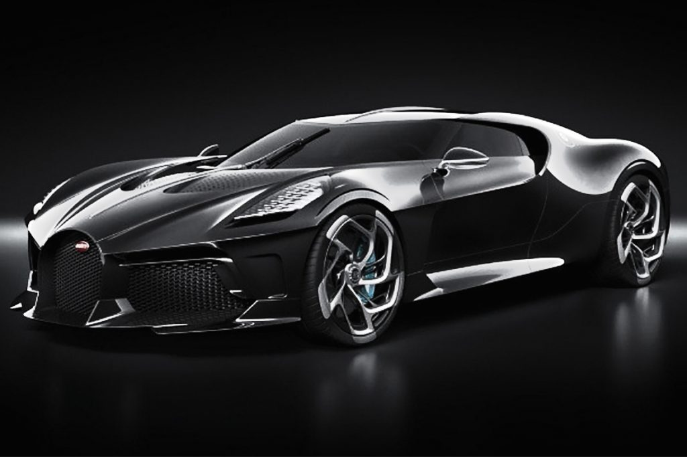
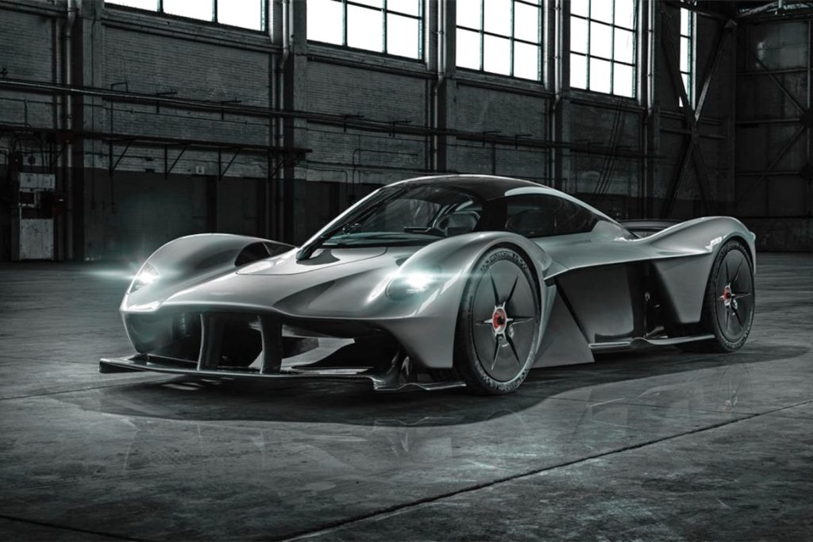

- Car Culture -
Dubai is known for its luxurious lifestyle, and the car culture in the city reflects this. The city has a thriving car culture, with an emphasis on high-end and exotic cars. The roads are filled with sleek and stylish vehicles, and car enthusiasts flock to the city to show off their cars.
One of the most significant events in the Dubai car culture calendar is the annual Dubai International Motor Show. This event brings together car enthusiasts from around the world to showcase the latest and most exotic cars. The show is a platform for manufacturers to unveil new models, and visitors get the chance to see and experience the cars up close.
Dubai's car culture is also evident in the city's infrastructure. The roads are wide and well-maintained, and there are numerous car dealerships and showrooms throughout the city. The city also has several racetracks, such as the Dubai Autodrome and the Yas Marina Circuit in nearby Abu Dhabi, where car enthusiasts can test their skills and speed.
In addition to luxury and exotic cars, Dubai's car culture also includes a love for modified cars. Many car enthusiasts in the city modify their cars with custom paint jobs, rims, and performance upgrades to stand out on the road.
Overall, the car culture in Dubai is an integral part of the city's lifestyle, reflecting its love for luxury and style.
Buggati
La Voiture Noire

Aston Martin
Valkyrie

- Unique Places -
Dubai is known for its luxurious lifestyle, and the car culture in the city reflects this. The city has a thriving car culture, with an emphasis on high-end and exotic cars. The roads are filled with sleek and stylish vehicles, and car enthusiasts flock to the city to show off their cars.
Dubai is known for its impressive skyline, which is home to some of the world's most iconic buildings. The city is known for its unique architecture and engineering feats that combine traditional Arabic elements with modern design.
One of the most famous buildings in Dubai is the Burj Khalifa, which is currently the tallest building in the world. It stands at a height of 828 meters and has 163 floors. The building features a unique design, with a tapering structure that resembles a desert flower. It offers panoramic views of the city from its observation deck, which is located on the 124th floor.
Another iconic building in Dubai is the Burj Al Arab, a luxury hotel that is shaped like a sailboat. It stands on an artificial island off the coast of Dubai and is considered one of the most luxurious hotels in the world. The hotel features extravagant suites, restaurants, and a helipad on the roof.
Dubai is also home to several impressive residential buildings, including the Princess Tower, which is the tallest residential building in the world, standing at a height of 413 meters. The Cayan Tower, with its unique twisting design, is another popular residential building in the city.
Other notable buildings in Dubai include the Dubai Mall, which is the largest shopping mall in the world, and the Dubai Frame, a massive rectangular structure that offers views of both old and new Dubai.
In summary, Dubai's buildings are a testament to the city's commitment to innovation and design. From towering skyscrapers to unique residential buildings and luxurious hotels, Dubai's skyline is a visual spectacle that reflects the city's ambition and progress.